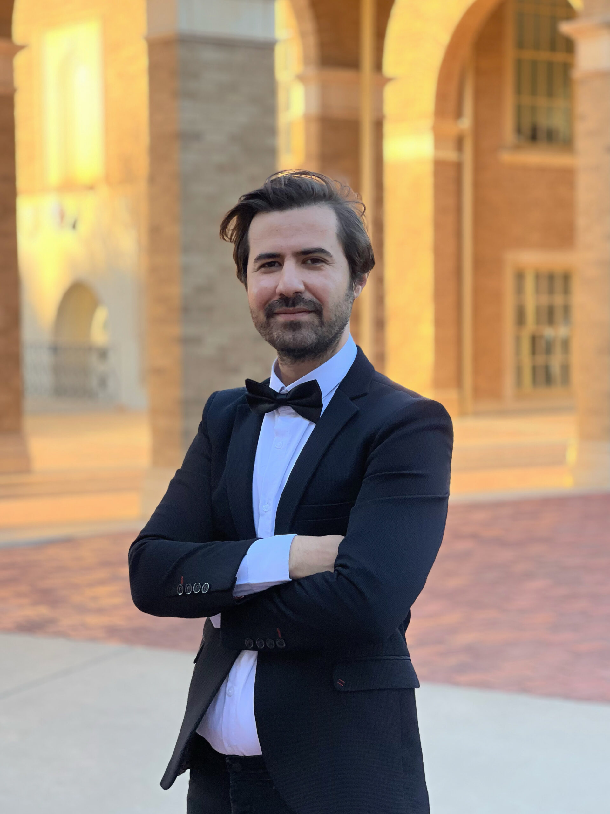

Photo by Venus BayatAli Balighi is a composer, electroacoustic musician, and educator. He is currently pursuing a Doctor of Musical Arts (DMA) in Music Composition and serves as a Graduate Part-Time Instructor.
Balighi’s work includes acoustic, live electronic, and fixed media compositions. His practice involves spatial audio, algorithmic composition, and the intersection of Persian microtonality—specifically the traditional Dastgah modal system—with contemporary serialism and electroacoustic techniques. His research explores animated and graphic notation, creative coding, and the integration of artificial intelligence into music creation and score generation. He also incorporates physical computing and interactive instrument design into his performances.
His catalog consists of compositions for solo instruments, chamber ensembles, full orchestra, and multichannel electronic formats, including Ambisonics. Balighi's works have been performed in North America, Europe, Asia, and South America at events such as the International Computer Music Conference (ICMC) at MIT, the Tehran International Electronic Music Festival, the New York City Electroacoustic Music Festival (NYCEMF), NoiseFloor UK, the Sonic Matter festival in Zurich, and the SPAM New Media Festival. He has worked with ensembles including Sputter Box, Lawrence University New Music Ensemble, Beltline Bones, Omni Quartet, and TellTale Opera Theatre.
Balighi has received awards and residencies, including the ICMC-MIT Special Call for Scores (2025), a funded residency at the Saari Residence by the Kone Foundation in Finland, and prizes at the Reza Korourian Awards for Electroacoustic Music and the Tehran International Electronic Music Festival. He serves as the Artistic Director for the Gilgamesh Arts & Culture Foundation. His professional memberships include the Society for Electro-Acoustic Music in the United States (SEAMUS), the International Computer Music Association (ICMA), ASCAP, and the Millennium Composers Initiative.
His academic writing appears in peer-reviewed journals including Organised Sound (Cambridge), the Computer Music Journal (MIT Press), and Emille, covering topics from spatial listening to AI in creative authorship. His music is featured on albums released by labels such as Noise a Noise, Post Orientalism Label, and RKC, including projects like his recurring Electropoem series, Zone 19, and Dastgah. Additionally, Balighi has composed soundtracks for short films and is a published author of creative writing and poetry.
Medium Bio (< 250 words)
Ali Balighi is a composer, electroacoustic musician, and educator, currently pursuing a Doctor of Musical Arts in Music Composition.
His work spans acoustic, live electronic, and fixed media formats. Balighi focuses on spatial audio, algorithmic composition, and integrating Persian microtonality with contemporary serialism. His research investigates animated notation, creative coding, artificial intelligence in score generation, and interactive instrument design.
His catalog features compositions for soloists, ensembles, orchestras, and multichannel formats like Ambisonics. Balighi's music has been performed globally at events including the International Computer Music Conference (ICMC) at MIT, the Tehran International Electronic Music Festival, NYCEMF, and the Sonic Matter festival, involving collaborations with ensembles such as Sputter Box and Beltline Bones.
He has received various honors, including the 2025 ICMC-MIT Special Call for Scores and a Kone Foundation Saari Residency. Balighi serves as Artistic Director for the Gilgamesh Arts & Culture Foundation and maintains memberships with SEAMUS, ICMA, ASCAP, and the Millennium Composers Initiative.
His research is published in peer-reviewed journals such as Organised Sound and Computer Music Journal. Balighi's compositions are featured on labels including Noise a Noise and Post Orientalism, highlighting projects like his recurring Electropoem series. Additionally, he composes short film soundtracks and publishes creative writing and poetry.
Short Bio (< 100 words)
Ali Balighi is a composer and educator pursuing a DMA. His acoustic, electronic, and fixed media works focus on spatial audio, AI score generation, and integrating Persian microtonality with contemporary serialism. His music has been performed globally at festivals including ICMC at MIT, NYCEMF, and Sonic Matter.
He serves as Artistic Director for the Gilgamesh Arts & Culture Foundation and has been awarded a Kone Foundation Saari Residency. Balighi's research appears in the Computer Music Journal and Organised Sound, and his music is released on labels including Noise a Noise.